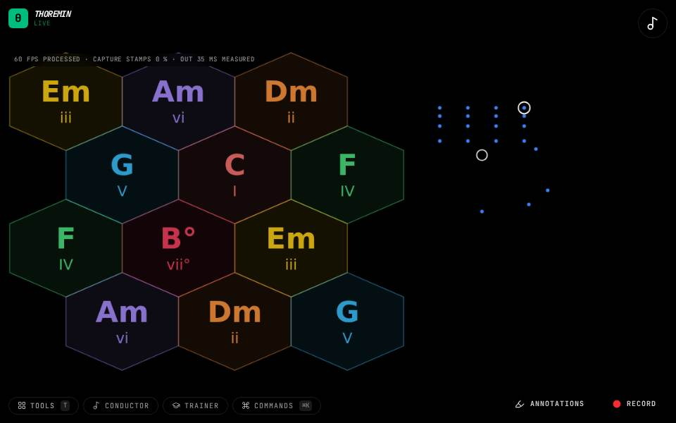
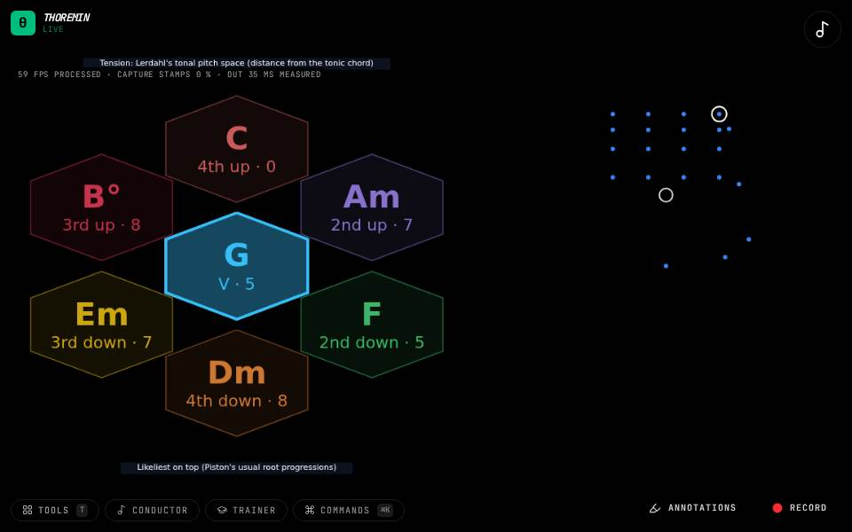
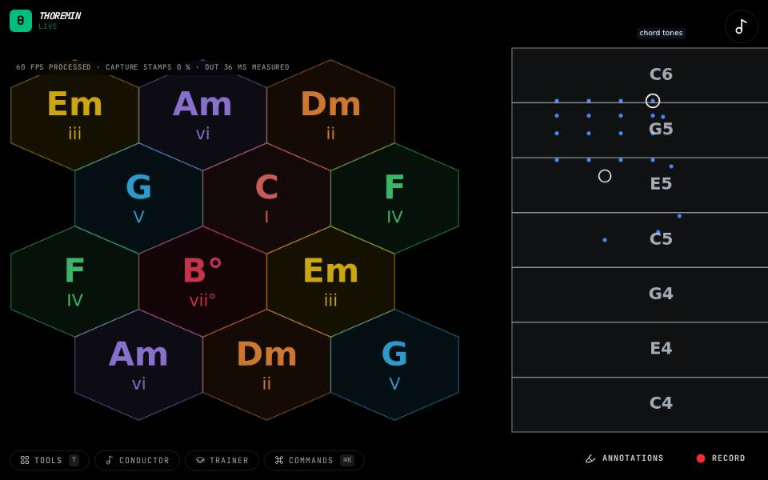

Chords and harmony
Point at chords instead of notes: a map or a wheel of a key's chords, a song that sets the chords for you to play over, a score whose chords you conduct.

Chord Map + Face
Point at a chord with your left hand.

Chord Map Strum
Point at a chord with your left hand.

Chord Map
Hold your left hand over a chord on the map to hold that chord.

Chord Wheel
Hold a chord with your left hand.

Conduct the Chords
Open the Conductor tool: a Haydn quartet is loaded.

Face Wheel
Look at the camera.

Next-Chord Wheel
Hold a chord with your left hand.

Pentatonic Map
Point at a chord with your left hand.
Play Along (microphone)
Allow the microphone and play a guitar, a piano or a recording.

Play Along (MIDI)
Connect a MIDI keyboard and play chords on it.

Tonnetz Wheel
Hold a chord with your left hand.

Wheel Walk
Hold a push out toward a move.